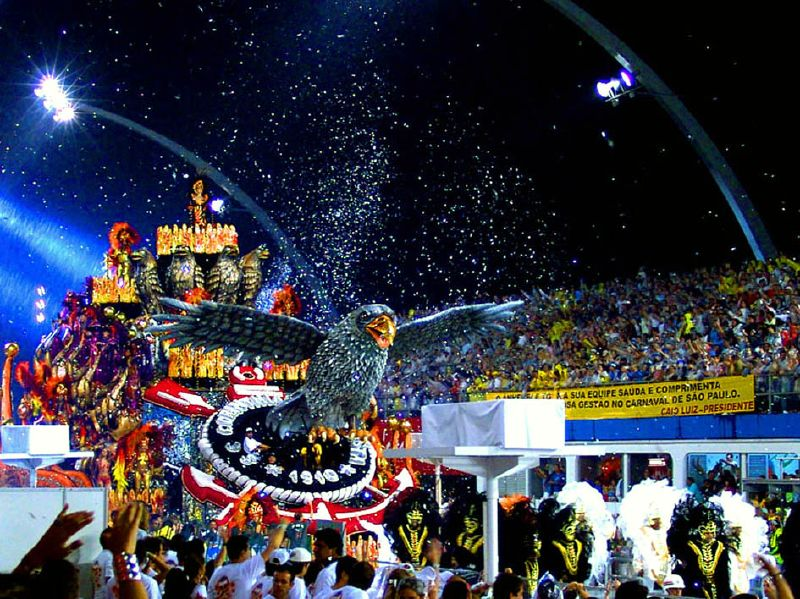
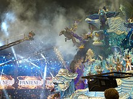

São Paulo
O Carnaval de São Paulo diz respeito a uma festa de momo
realizada na cidade de São Paulo, no estado brasileiro homônimo.É composto pelo
desfile das escolas de samba no sambódromo do Anhembi, bailes em clubes e blocos de rua.Atualmente,
é considerado um dos maiores e mais importantes eventos populares do Brasil.
Em São Paulo, sob forte influência das populações que migravam do campo para a
cidade e com o contexto da crise da economia cafeeira, foi a população
resultante do êxodo rural causado pela crise do café que desencadeou o início do Carnaval de São Paulo
Algumas fotos dos desfiles:
Gaviões da Fiel

ㅤㅤ

Nenê de Vila Matilde
Conheça um pouco mais sobre
Voltar